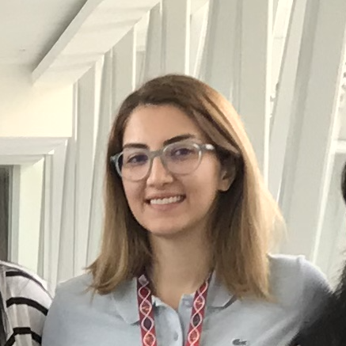

People
 Yu Amanda Guo
Yu Amanda Guo (PostDoc)
PhD in bioinformatics and genetics from Cornell University, USA.
Umesh Ghoshdastider (PostDoc)
PhD in biochemistry and bioinformatics from Goethe University, Germany.
 Neha Rohatgi
Neha Rohatgi (PostDoc)
PhD in systems biology, University of Iceland.
 Guanhua Peter Zhu
Guanhua Peter Zhu (PostDoc)
PhD in computational biology, Nanyang Technological University, Singapore.
 Mei Mei Chang
Mei Mei Chang (Bioinformatics Scientist)
Bachelor in biostatistics from National University of Singapore.
 Kiran Krishnamachari
Kiran Krishnamachari (Bioinformatics Scientist)
Bachelor in engineering, National University of Singapore.
 Weitai Huang
Weitai Huang (Graduate student)
A*STAR/NUS graduate student.

Marjan Mojtabavi Naeini (Graduate student)
A*STAR ARAP fellow.
 Anders Jacobsen Skanderup
Anders Jacobsen Skanderup (Principal Investigator)
PI at GIS and Adjunct Assistant Professor at School of Computing, National University of Singapore. PhD in bioinformatics from University of Copenhagen, Denmark, and previously a Postdoc at Memorial Sloan-Kettering Cancer Center, USA.
 Current interns
Current interns
- Dylan Lu, University of British Columbia
- Alexander Swift-Scott, University of British Columbia
Past lab members and interns
Hamzeh Mesrian, University of Isfahan; Egor Revkov, Moscow Institute of Physics and Technology; Anuar Yeraliyev, University of British Columbia; Kayla Lee, University of British Columbia; Satwik Bhattamishra, Birla ITS; Tanmay Kulshrestha, Birla ITS; Karthik MuthuKumar, Northeastern University, Boston; Tin Nguyen, University of Science, HCM City; Sundar Solai, Harvard University; Probhonjon Baruah, Indian Institute of Technology, Guwahati